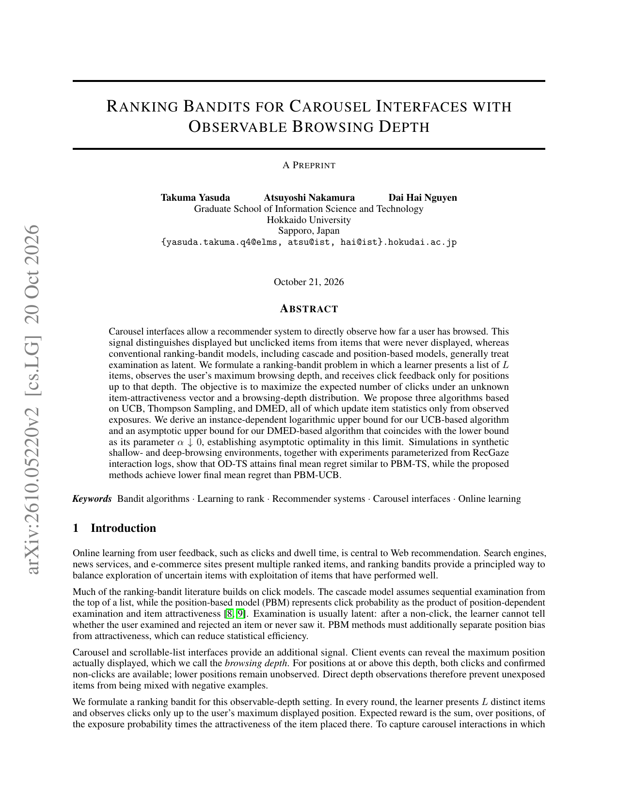
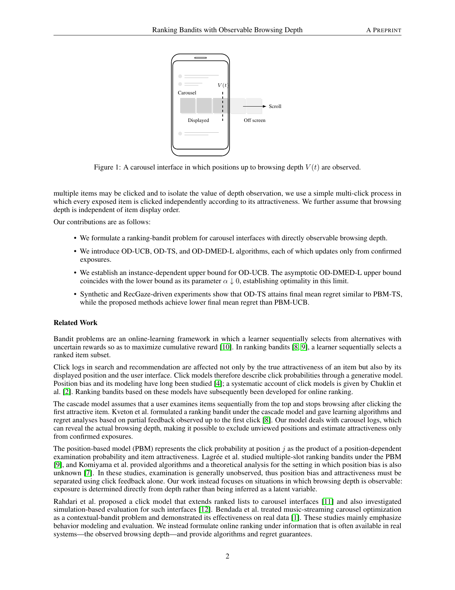
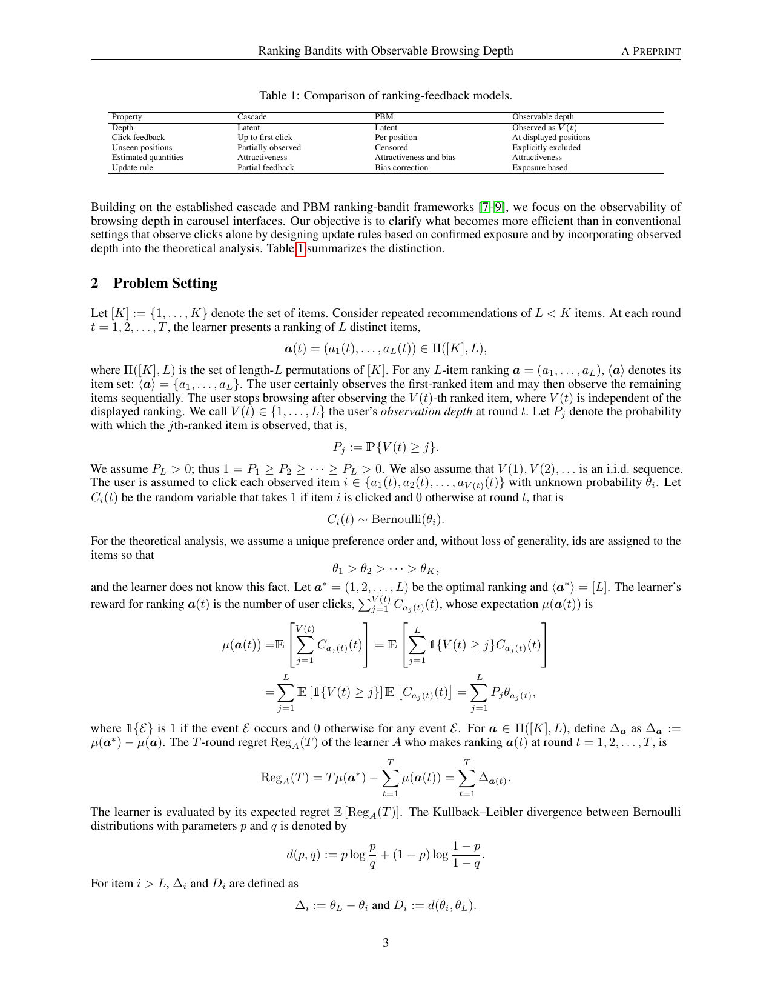

轮播里用户会在某个深度停下，比该深度更靠后的坑位既没点击也没曝光；经典位置偏差模型（PBM）却仍把它们当成「看见了但不点」。这篇在可观测浏览深度 $V(t)$ 下提出 OD-UCB / OD-TS / OD-DMED-L：只对真正曝光过的位置更新统计量。OD-UCB 有实例相关对数 regret 上界；OD-DMED-L 的渐近上界与下界主项一致。在浅/深合成环境与 RecGaze 标定环境上， 时 OD-TS 最终平均 regret 与知情 的 PBM-TS 相当（浅环境 1121.8 vs 1159.9），三类 OD 方法均低于 PBM-UCB。能观测浏览深度时，就别再对没看见的坑位做负反馈。
1. 问题：没看见 ≠ 不喜欢
每轮展示 个位置的排列，用户观察到深度 $V(t)$ 后停下；点击只发生在已观察位置，且与物品吸引度 有关。PBM 用已知或估计的检查概率 解释「位置越后越少点」，但把未观察位置也卷进似然。作者假设 $V(t)$ 可观测且与展示顺序独立，目标是最大化期望点击、最小化相对最优排列的 regret。

2. 方法：只更新观察到的曝光
记物品 截至 的曝光次数 与点击次数 ，二者都只在 的位置累计。OD-UCB 在观测均值上加宽度项，对物品排序取 top-；OD-TS 对 Bernoulli 吸引度用 Beta 后验采样；OD-DMED-L 按 DMED 风格做渐近最优探索。与 PBM-UCB/TS 对比时，基线仍使用真实 ，但看不到当轮实现的深度——OD 方法用的信息是深度，不是位置偏置表。

3. 核心贡献：深度观测换掉位置偏置表
理论：OD-UCB 给出 gap-dependent 对数上界；相对 PBM-UCB，在 时主项少了 因子。OD-DMED-L 渐近上界与下界主项重合，说明该极限下最优。实践：不必先估 ，也避开 PBM-TS 对非共轭后验的拒绝采样。
4. 实验
设定 $K=50$，$L=5$，。三环境：synthetic shallow（ 衰减快）、synthetic deep（ 衰减慢）、RecGaze-driven（眼动+点击估计的 与 CTR，3477 次交互、87 人）。种子间共享深度与点击随机变量。
| 环境 | OD-TS | PBM-TS | OD-DMED-L | OD-UCB | PBM-UCB |
|---|---|---|---|---|---|
| shallow | 1121.8 | 1159.9 | 2137.2 | 6280.6 | 19568.2 |
| deep | 1326.9 | 1356.8 | 4006.6 | 8761.5 | 12226.3 |
| RecGaze | 856.1 | 876.9 | 1910.5 | （高于 TS） | 更高 |
OD-TS 与 PBM-TS 置信区间重叠，但 OD-TS 不需要真实 。长视野 诊断显示 OD-DMED-L 的 靠近理论系数。

5. 局限
作者写明：独立点击、深度与排列无关是建模假设；RecGaze 是日志标定仿真，不是线上部署，不能断言真实用户过程下的 regret。部分次优 CTR 估计接近，但 top- 集合仍唯一。
6. 实践意义
一是轮播/信息流若能打点真实浏览深度（曝光像素、眼动代理、滑停），bandit 更新应掩掉未曝光位。二是已有 PBM-TS 流水线可先 A/B 换 OD-TS：少依赖 估计，有望保持相近 regret。